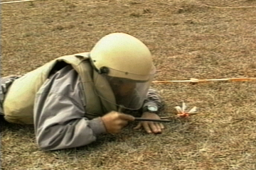
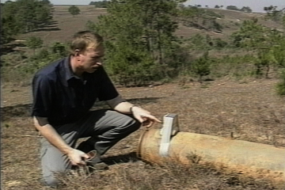
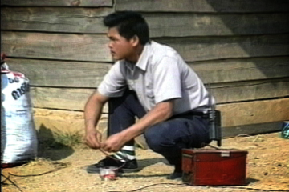

Detection and Removal
Laotians are trained in detecting, marking and clearing UXOs. This chip reveals how a typical cleaing operation might work.
Play 2:30

Explosive Remedy
At times, large munitions are discovered. Explosives are then used to detonate the bomb and a large mushroom cloud results.
Play 2:30

Warning a Village
Often, UXOs are detected in highly visible and populated areas. In these cases, local residents must be evacuated. It takes everyone's cooperation to make sure munitions are cleared safely.
Play 2:30